Bordeaux
Le module d'essai : complet et gratuit.
Gratuit
Ouvrir gratuitementPréparation à l'examen WSET® niveau 3 · Award in Wines
QCM WSET 3, questions à réponse courte corrigées immédiatement, dégustation selon l'approche systématique (SAT), examens blancs et tous les pièges à éviter. En français, où que vous soyez. Une appli personnalisée : elle crée votre planning de révision jusqu'à l'examen, vous dit quoi faire chaque jour et vous aide à combler vos lacunes.
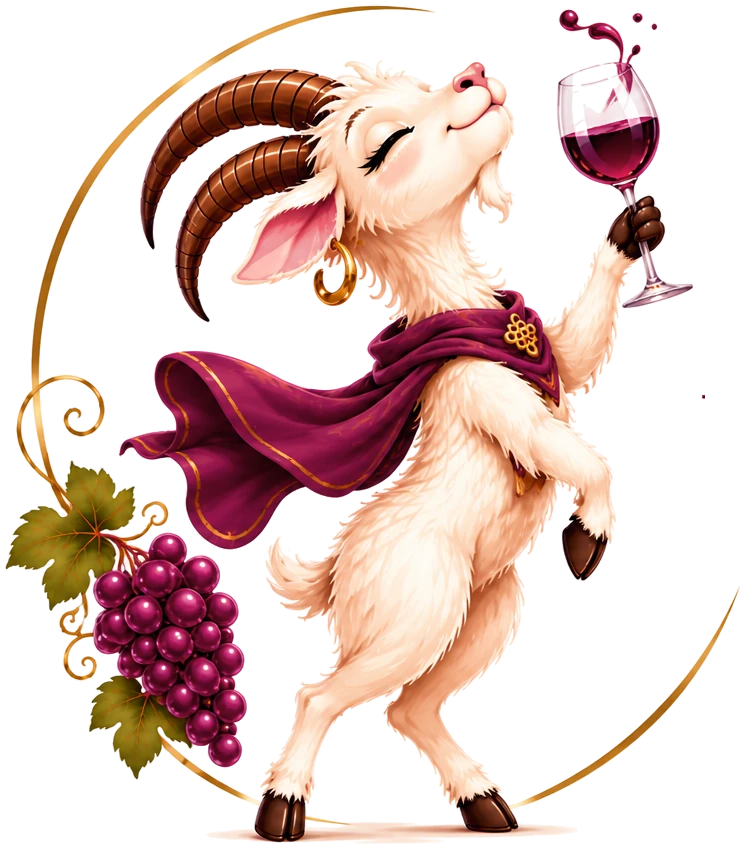
Question éclair · Bordeaux
D'autres questions gratuites ↓Pas seulement des QCM : des exercices de toutes sortes, des jeux, des films animés, des podcasts, des cartes et des outils pour vos notes. Touchez une case pour l'essayer.

QCM, questions ouvertes corrigées, cartes et jeux sur Bordeaux : tout le module est ouvert, sans carte bancaire. Testez la méthode sur l'une des régions phares de l'examen.
Six vrais exercices, directement sur cette page. Choisissez-en un et jouez : dans l'application, il y en a des milliers.
Dans l'application, le module Bordeaux est entièrement gratuit : QCM, questions ouvertes corrigées et révision de vos erreurs.
Enregistrer mes résultats et créer mon planTouchez un nom local, puis le cépage correspondant.
Des affirmations qui trompent beaucoup de candidats.
Touchez la carte pour la retourner.
À l'examen WSET 3, les questions ouvertes valent la moitié de la théorie. Répondez mentalement, puis regardez les éléments qui rapportent des points.
Le vin B a été bouché avec un bouchon en liège naturel. Quelles conditions de stockage recommanderiez-vous pour le stockage à long terme de ce vin ? (5 points)
Chaque thème devient un court film animé et commenté : la taille, la vinification, les régions avec leurs cartes. À la fin : les mots clés et un test.
▶ Voir les films dans l'app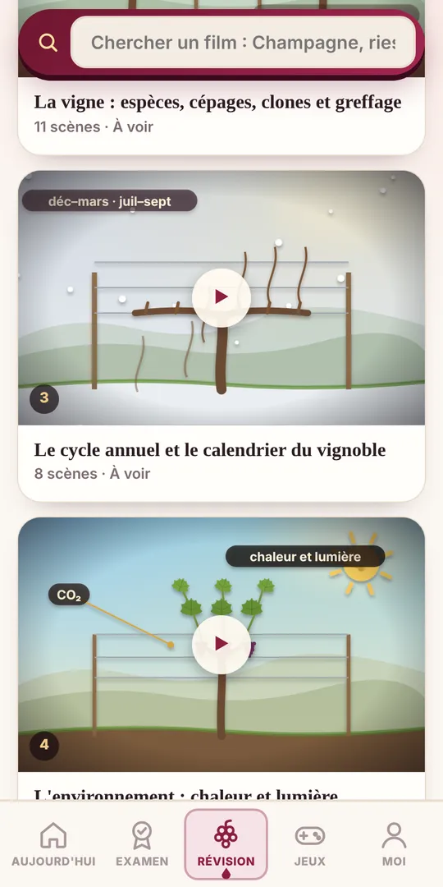
Écoutez un vrai épisode. Dans l'application, les 45 chapitres sont disponibles, avec le texte qui défile pendant l'écoute.
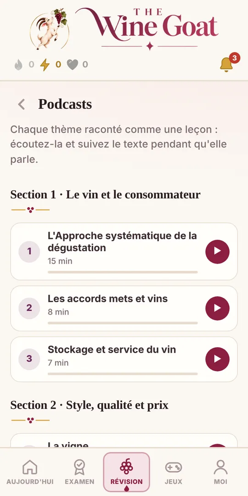
Deux outils qu'aucun livre ne vous donne.
Photographiez vos pages manuscrites : elles restent dans l'application, sur votre appareil, à côté de votre texte.
L'application écoute l'enseignant et transcrit pendant qu'il parle.
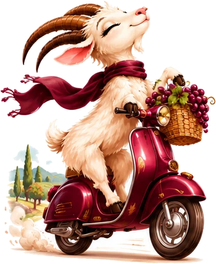
De vrais écrans, tels que vous les verrez sur votre téléphone.
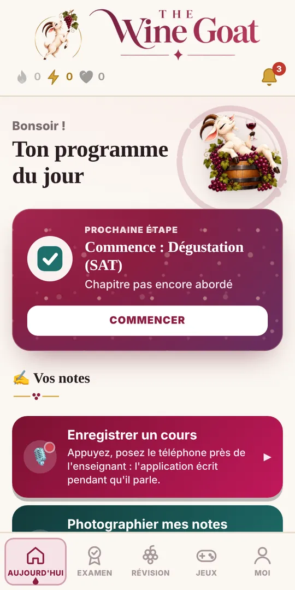
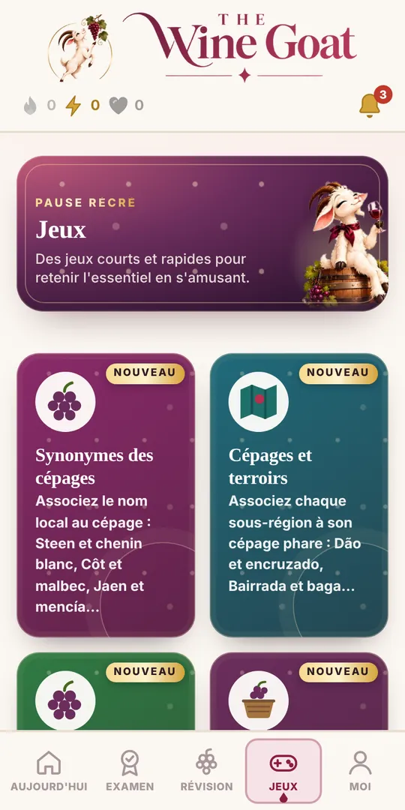
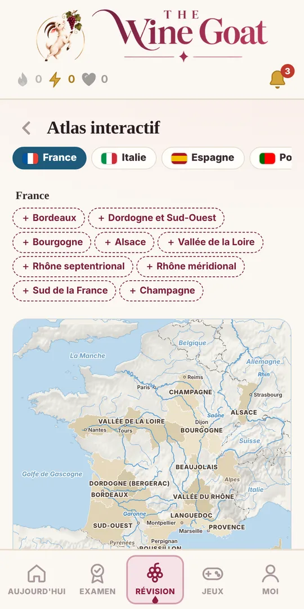
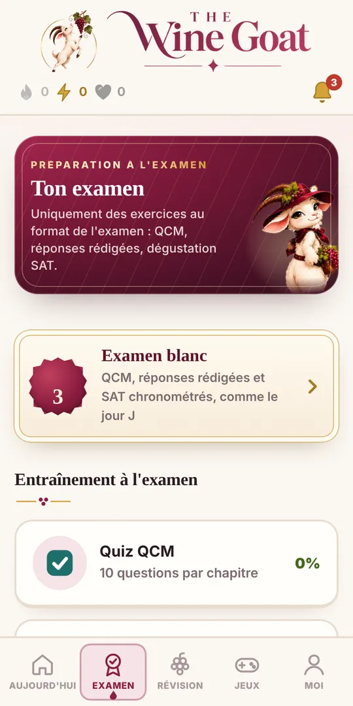
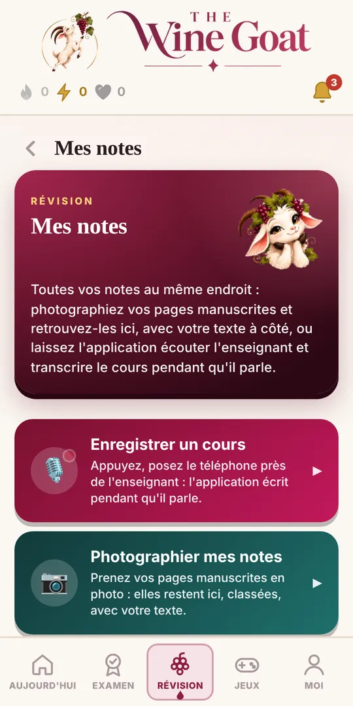
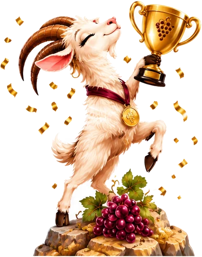
Les autres ressources pour préparer le WSET 3 ne couvrent qu'une partie. Ici, vous avez tout, dans votre langue.
| The Wine Goat | Applis de QCM | Annales en PDF | Livre et notes | |
|---|---|---|---|---|
| QCM | ✓ plus de 2 000 | ✓ | ✓ | — |
| Correction des réponses rédigées | ✓ immédiate | — | soi-même | — |
| Films animés et podcasts | ✓ 68 films · 45 podcasts | — | — | — |
| Jeux pour mémoriser | ✓ 11 jeux | parfois | — | — |
| Cartes interactives | ✓ 42 cartes | — | — | sur papier |
| Notes en cours et photos | ✓ | — | — | à la main |
| Langues | FR · IT · EN | souvent anglais seulement | anglais | — |
| Pour commencer | Bordeaux gratuit | payant | payant | — |
Pas d'abonnement : vous débloquez un module en un seul paiement et il reste à vous pendant 12 mois. Bordeaux est gratuit pour tous.
Le module d'essai : complet et gratuit.
Gratuit
Ouvrir gratuitementApproche SAT, accords, conservation et service.
9 € paiement unique
DébloquerClimat, environnement, conduite de la vigne et taille.
9 € paiement unique
DébloquerVinification des blancs, rouges et rosés, élevage, prix.
9 € paiement unique
DébloquerBourgogne, Beaujolais, Alsace, Loire, Rhône, Sud.
9 € paiement unique
DébloquerItalie, Espagne, Portugal, Allemagne, Autriche, Hongrie, Grèce.
12 € paiement unique
DébloquerÉtats-Unis, Canada, Chili, Argentine, Afrique du Sud, Australie, Nouvelle-Zélande.
9 € paiement unique
DébloquerChampagne, prosecco, cava, xérès, porto et vins doux.
9 € paiement unique
DébloquerExamens blancs complets, logique d'examen et pièges.
12 € paiement unique
DébloquerTout le niveau 3, tous les outils, 12 mois.
78 € 59 € Économisez 19 €
Prix TTC. Vous avez déjà des modules ? En passant à « Tous les modules », vous ne payez que la différence.
Chaque module comprend tous les outils de l'application pour cette partie du programme.
L'appli vous crée un planning jour par jour jusqu'à l'examen, selon votre objectif (Pass, Merit ou Distinction), la date de l'examen, vos jours de cours et le temps dont vous disposez. Elle vous conseille, repère vos points faibles et vous les fait réviser en priorité.
Des questions à choix multiple sur la viticulture, la vinification, les régions, les effervescents et les vins mutés, avec l'explication de chaque réponse.
Rédigez votre réponse et recevez aussitôt une correction point par point, d'après les points clés du livre : ce que vous avez trouvé, ce qui manque, combien de points vous auriez obtenus.
Photographiez les pages de vos notes et retrouvez-les dans l'application à côté de votre texte, ou transcrivez le cours pendant que l'enseignant parle.
Pour chaque question ouverte, la réponse modèle qui obtient tous les points, pour comprendre ce qu'attend le correcteur.
Aspect, nez, bouche et conclusions : entraînez-vous à décrire le vin avec le bon vocabulaire et à justifier qualité et potentiel.
La chaîne climat → raisin → vin, les mots qui font perdre des points, les questions pièges qui reviennent chaque année.
Chaque mauvaise réponse revient jusqu'à ce que vous la sachiez : le compteur d'erreurs baisse à mesure que vous les corrigez.
Associations, noms locaux des cépages, cartes des régions et podcasts pour réviser même dans le métro.
Savoir comment on est évalué, c'est déjà la moitié de la préparation. L'examen WSET Level 3 Award in Wines comporte deux parties, et il faut réussir les deux.
Elles couvrent tout le programme, des conditions du vignoble aux régions du monde. Il faut être rapide et précis.
Des questions rédigées, découpées en sous-questions : il faut relier la cause et l'effet, pas aligner des mots-clés.
Une note de dégustation complète selon l'approche systématique (SAT) : description précise et conclusions justifiées.
Il faut obtenir 55 % à la dégustation et dans chacune des deux sections de la théorie. Les mentions possibles sont Pass, Merit et Distinction.
Le conseil The Wine Goat : les questions à réponse courte sont la partie où l'on perd le plus de points. Entraînez-vous à l'écrit dès la première semaine.
Le guide pour réussir le WSET Level 3 Award in Wines du premier coup : quoi réviser, comment s'entraîner et quelles erreurs éviter.
La première partie de la théorie comprend 50 questions à choix multiple. La meilleure préparation consiste à répondre à beaucoup de questions au format de l'examen et à comprendre chaque erreur : The Wine Goat réunit plus de 2 000 QCM WSET 3 expliqués, classés par thème et par région, du vignoble au chai, de Bordeaux à la Nouvelle-Zélande.
Les 4 questions à réponse courte représentent la moitié de la théorie, et c'est là que l'on perd le plus de points. Connaître les faits ne suffit pas : il faut expliquer le pourquoi, en reliant la cause et l'effet (climat → maturité → style du vin). Avec The Wine Goat, vous rédigez votre réponse, recevez une correction point par point d'après les points clés du livre et voyez la réponse modèle.
Faire au moins quelques examens blancs complets et chronométrés est le meilleur moyen d'arriver serein : on prend le rythme de l'examen et on voit quels chapitres réviser. Le module « Examen et stratégie » comprend des examens blancs WSET 3, la logique d'examen et les pièges les plus fréquents.
L'épreuve de dégustation à l'aveugle de deux vins se prépare avec l'approche systématique (SAT) : aspect, nez, bouche et conclusions sur la qualité et le potentiel de garde. Dans l'application, vous trouvez le vocabulaire de chaque rubrique et des questions pour entraîner vos conclusions ; le verre reste le meilleur entraînement.
Beaucoup de supports de révision n'existent qu'en anglais. The Wine Goat est en français, en italien et en anglais : vous révisez dans votre langue et passez à l'anglais d'un geste si vous présentez l'examen en anglais.
Dix minutes de QCM par jour, une question ouverte rédigée par semaine, la révision des erreurs et un examen blanc dans les dernières semaines : c'est le rythme que nous proposons. Avec les modules, vous choisissez par quelle partie du programme WSET 3 commencer, et Bordeaux est gratuit pour essayer.
QCM et questions ouvertes suivent le programme de l'examen WSET niveau 3, thème par thème et région par région.
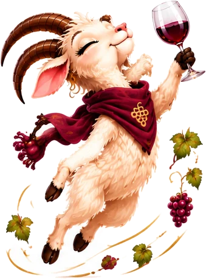
Dix minutes de QCM par jour valent mieux qu'un marathon la veille de l'examen. Reprenez toujours là où vous vous êtes arrêté.
Les questions à réponse courte s'apprennent en écrivant. Recevez la correction et comparez-la à la réponse parfaite.
Les questions ratées reviennent jusqu'à ce que vous les sachiez. Le compteur vous montre ce qu'il reste.
Des épreuves complètes chronométrées, dans les conditions du jour J, pour arriver sans surprise.
Une seule plateforme pour tout le parcours WSET Wines : commencez au niveau qu'il vous faut et continuez avec la même méthode.
Le niveau avancé : théorie complète, questions à réponse courte, dégustation à l'aveugle selon le SAT et examens blancs.
Commencer le niveau 3Les grands cépages et régions du monde, l'étiquette et les accords : QCM et révisions pour l'examen.
Me prévenirLes bases du vin : styles, service et accords mets-vins, avec des quiz courts pour arriver serein à l'examen.
Me prévenirNon. The Wine Goat est une plateforme indépendante de préparation à l'examen. Elle n'est ni affiliée ni agréée par le Wine & Spirit Education Trust : pour vous inscrire à l'examen, passez par une école agréée (Approved Programme Provider).
Chaque module couvre une partie du programme (par exemple « Europe » ou « Le chai ») avec QCM, questions ouvertes corrigées, jeux et supports de révision. Vous le débloquez en un seul paiement et il reste à vous pendant 12 mois, sans renouvellement automatique.
Tout le module Bordeaux, en entier, plus quelques exercices d'essai des autres modules. Aucune carte bancaire n'est demandée.
Non, c'est un complément. Le cours et les supports officiels vous donnent les bases ; The Wine Goat vous entraîne à les retenir et à bien les rédiger le jour de l'examen.
Oui. Toute la plateforme existe en français, en italien et en anglais, et vous changez de langue quand vous voulez : pratique si vous passez l'examen en anglais.
Rédigez votre réponse : l'application la compare aux points clés du livre, indique les éléments trouvés et ceux qui manquent, estime la note et vous montre la réponse modèle. Tout se fait sur votre appareil, sans service extérieur.
Cela dépend de votre niveau de départ, mais il faut en général quelques mois de travail régulier en plus des heures de cours. Les modules restent à vous pendant 12 mois : vous avez le temps, même pour une seconde session.
La théorie comprend 50 questions à choix multiple et 4 questions à réponse courte ; s'y ajoute la dégustation à l'aveugle de deux vins.
55 % à la dégustation et dans chacune des deux sections de la théorie. Les mentions sont Pass, Merit ou Distinction.
Oui : guide de l'approche systématique (SAT), vocabulaire pour chaque rubrique et questions sur la qualité et le potentiel de garde. Rien ne remplace toutefois le vin dans le verre.
Oui, The Wine Goat fonctionne dans le navigateur du téléphone, de la tablette et de l'ordinateur. Votre progression reste enregistrée sur l'appareil que vous utilisez.
Oui, les niveaux 2 et 1 arrivent avec la même méthode et la même formule par modules.

Six questions gratuites, sans carte bancaire : découvrez tout de suite où vous en êtes.
Essayer gratuitement